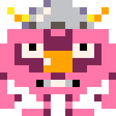
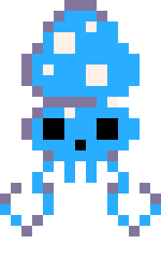
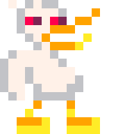
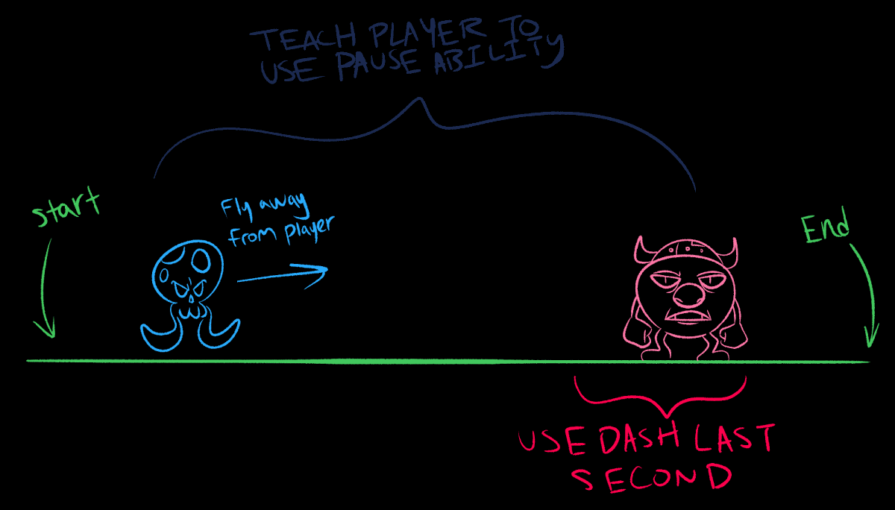

Highlights from my design document include...
- Incorporating the limitation of you are your own worst enemeny
- Incorporating the theme of darkness
- Enemy & puzzle design
Game Design
Given the Mini Jam's theme of Darkness, I pulled from my love of cryptids & creatures of the night to make the player character a vampire: the Dark Lord Allowen
The jam's limitation, You Are Your Worst Enemy, meant no enemy should pose a real threat to Allowen; instead, his only downfall should be a flaw of his own character, reflected in both narrative & gameplay
Hence, Allowen, a vampire with an insatiable & self-destructive appetite, was born!

Example of the theme & narrative
To make Allowen feel like an unstoppable force (when properly fed), I employed "Game Feel" through his first mechanic: morphing into a wall of billowing darkness that can lunge forward & engulf foes by pressing Z!

Lunge ability has 3x uses, as denoted by the red tokens
Allowen's self-destructive appetite is represented by a constantly decreasing hunger bar, creating urgency; his second mechanic lets him momentarily pause his cravings before having to munch on more monsters to survive by pressing X!

Pause ability has 3x uses, as denoted by the blue tokens
Enemy Design
To account for Allowen's hunger & movement abilities, certain foes were designed with special characteristics...

Pinky
Pinkies cannot move, making them perfect for a quick snack to reset the hunger bar by lunging

Squib
Squibs are fast, making them difficult to catch; they incentivize the pause ability, giving Allowen more time to chase them down without immediately dying of hunger

Ducky
While not as speedy as Squibs, Duckies can evade Allowen, incentivizing either ability to close the gap
Level / Puzzle Design
Together, the two abilities & different enemies create a strategic experience where players must decide when to use their finite powers & who to use them on
Do I lunge at the Squib now, or save that ability for later?
To further compel this, enemies are placed like pieces on a chess board, tying progression to critical thinking & resource management

My first sketches of the enemies!
On level 2 (as seen in the original sketch above) there is a large gap between the first and second enemies... Allowen would die of hunger before reaching the Pinky without using his pause ability!